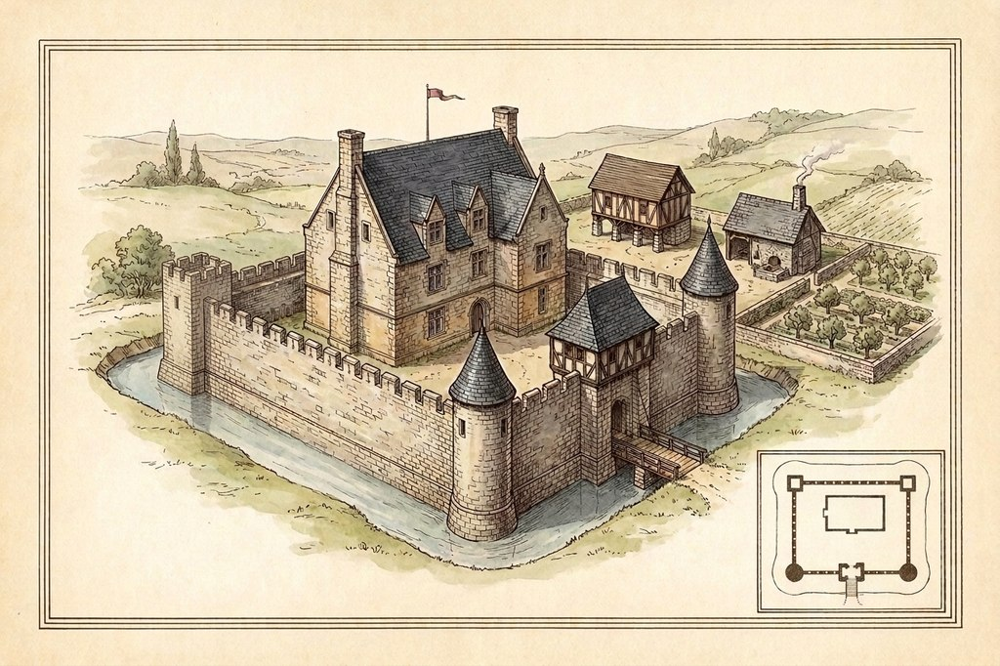
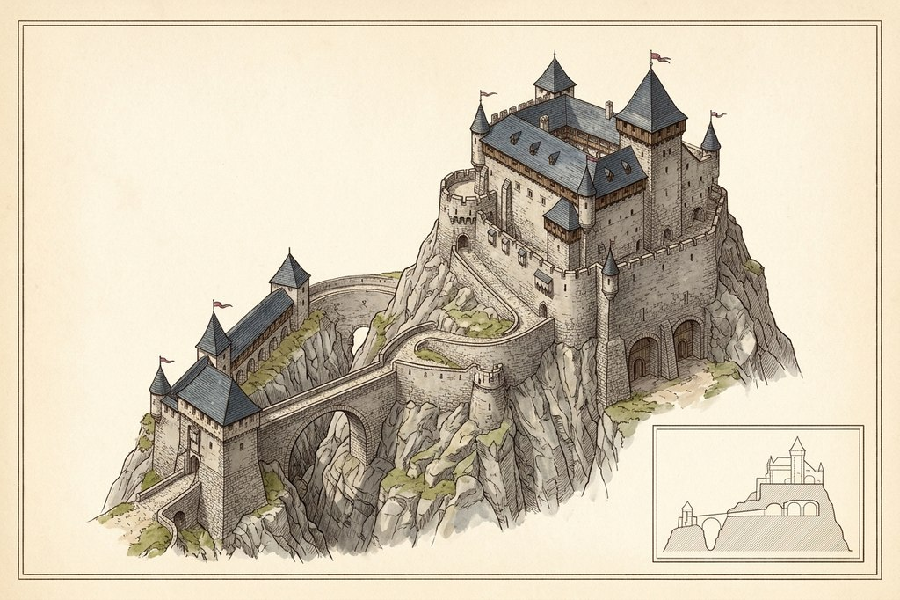

Casas Nobres, Feudos e Fortificações
Criação de Casas Nobres nas 5 culturas, custos de castelos e reforma de ruínas, obras produtivas, soldados, trabalhadores e cerco sem pólvora (Ano 418 EF).
“Qualquer aventureiro com sorte junta um saco de prata; mas erguer uma parede que continue de pé quando você estiver morto, alimentar trinta bocas no inverno e fazer dois vizinhos armados respeitarem o seu selo — isso é fundar uma Casa.”
👑 Criação em 6 Passos, As 5 Tradições Culturais, Heráldica & Tabelas de Raízes da Casa
Como criar e governar uma casa nobre
Este Tomo XV oferece aos jogadores e ao Mestre todas as ferramentas para fundar uma Casa Nobre, Dinastia Mercante ou Clã Senhorial, erguer ou reconstruir fortificações, contratar soldados, especialistas e trabalhadores, instalar defesas e obras produtivas e resolver cercos militares sem pólvora no Ano 418 da Era da Forja.
Todas as regras e valores foram calibrados diretamente sobre o Padrão Prata (1 PO = 10 PP = 100 PC) do Tomo I — Livro de Regras (trabalhador 3 PC/dia = 9 PP/mês, oficina/armazém 1.200–3.000 PP rendendo 40–120 PP/mês, torre/solar fortificado 8.000–20.000 PP exigindo Status 3+), os degraus jurídicos do Tomo II — Guia de Cenário e as matrizes culturais do Tomo V — Onomástica e Toponímia.
Os Seis Passos para Fundar a Casa do Grupo
Quer um personagem já comece a campanha como herdeiro de um nome antigo, quer o grupo conquiste terras por seus próprios feitos, preencha os seis pontos abaixo:
- Escolher a Matriz Cultural e Jurídica (5 Tradições): define como o título funciona, como o nome da família é formado e qual é o sobrenome tradicional de filhos naturais não legitimados.
- Definir a Via de Origem:
- Linhagem Antiga em Declínio: o PJ (ou grupo) herda nome reconhecido (
Status 2+), arquivo familiar e direitos antigos, mas começa com sede desgastada, terras hipotecadas à Casa Falcenzo (N086) ou disputa sucessória. - Casa Nova Erguida por Feitos (Ascensão em Campanha): exploradores plebeus ou bastardos que conquistam Carta de Patente (
Status 1), Consagração de Cavalaria (Status 2) e finalmente uma Carta de Concessão Feudal ou Mercantil (Status 3), frequentemente recebendo o direito de reerguer uma fortaleza arruinada na fronteira (pela metade do tempo e45%do preço novo!).
- Linhagem Antiga em Declínio: o PJ (ou grupo) herda nome reconhecido (
- Criar Nome, Brasão e Lema: escolha esmaltes, figura central e uma frase curta que expresse a memória ou o dever da família.
- Sortear ou Escolher 1 Virtude Histórica e 1 Dívida/Sombra: todo domínio vivo possui uma vantagem herdada e uma cobrança política.
- Assentar a Sede (
F01–F10) e suas Obras (D01–D16): defina o prédio central, quantos Slots de Defesa e Slots de Obra estão ocupados e se há aldeias ou oficinas sustentando o cofre. - Escalar a Guarnição e a Corte Doméstica (
G01–G14): contrate vigias, besteiros, artesãos e um Senescal para que o feudo não colapse quando os personagens saírem em expedição!
As cinco tradições senhoriais e heráldica de Alenia

Em Alenia, "nobreza" não tem o mesmo formato em todas as terras. Um barão de Aurora governa pela terra e pelo juramento militar; um patrício de Corallis governa pelo cais, pelo livro-caixa e pelo assento no Conselho; um chefe de oásis em Gaddra governa guardando a água e a hospitalidade:
| Cultura / Domínio | Modelo de Casa & Fórmula do Nome (Tomo V) | Sede Típica Inicial | Bastardos | O Que Confere Legitimidade Real |
|---|---|---|---|---|
| 1. Reino de Aurora (Feudal / Clássico) | Casa de / d' [Terra] ou Dinástico (-ion, -aris, -is) (ex.: Casa d'Altrax, Casa Valerion, Casa Ferraris) | Torre de Vigia (F04) ou Solar Rural (F05) | Cinza | Carta régia selada em Altavanne (ou subfeudo jurado a uma das 6 Grandes Casas) e proteção armada das vilas. |
| 2. Liga de Corallis (Patrício / Talassocrático) | Família dal / della [Marco] ou Plural -i (ex.: Casa della Rocca, Casa Falcenzo, dei Coralli) | Solar Urbano Patrício (F02) ou Forte Costeiro (F07) | Coral | Assento em guilda/câmara municipal, solvência bancária, posse de navios (Tomo XIV) e patrocínio cívico. |
| 3. Despotado de Kalis (Setentrional / Ferro) | Casa von [Rocha/Forte] ou Composto Duro (ex.: Casa von Kragstad, Casa Ulscold, Hrafngard) | Mota de Madeira Negra (F03) ou Escarpa (F09) | Sombra | Disciplina da guarnição, cota de madeira negra/minério entregue sem atraso e vigilância implacável das costas. |
| 4. Confederação de Gaddra (Solar / Clânico) | Clã al- [Marco] ou Dinástico -id (ex.: Clã Zaharid, Clã al-Hajar, Qarsol) | Cácer de Oásis e Cisterna (F06) | Duna | Manutenção de poços acessíveis, respeito inviolável à Lei da Hospitalidade (3 dias) e mediação dos Árbitros. |
| 5. Fronteiras Silvanas (Pacto / Matas) | Linhagem / Ramo ab / ferch ou Composto Antigo (ex.: Ramo Brancaden, Gwaedlyn) | Entreposto de Pacto (F01) ou Salão (F03) | Bruma | Custódia sustentável da mata/rio sem incêndio nem corte predatório, validada pelo Círculo de Anciãos. |
Guia Prático de Brasões, Cores e Lemas
A heráldica de Alenia é sóbria, física e reconhecível à distância através da chuva ou da poeira de batalha — sem criaturas mágicas inexistentes no cenário:
- Esmaltes e Metais Clássicos: Carmesim (soberania, sangue pago, Chama Solar), Ouro/Âmbar (trigo, sol, fidelidade), Prata/Branco (verdade, sal, gelo limpo), Negro/Ferro (luto da Faixa Negra, minas, vigília noturna), Azul-Marinho/Verde-Escuro (rotas de Corallis, matas de Vergod).
- Peças e Figuras Autênticas: bigorna, ponte de pedra, torre sobre bruma, chave e tigela (Anfitriã), balança (Vigia), remo ou ampulheta (Barqueiro), feixe de trigo (Semeadora), corvo, leão de montanha, âncora, farol, cervo-férreo ou faixa negra diagonal (memória de 356 EF).
- Sinal de Bastardia e Legitimação: um bastardo reconhecido pode portar as cores paternas atravessadas por uma cotica (faixa estreita) cinza-pedra; caso receba Decreto Real de Legitimação (Tomo II), a faixa é substituída por uma bordadura dentada de prata ou ouro, fundando legalmente um ramo cadete próprio.
Tabelas Rápidas de Raízes da Casa (1d8)
1d8 | Virtude Histórica da Casa (Vantagem Inicial) | Dívida, Mancha ou Ameaça Herdada (Gancho de Campanha) |
|---|---|---|
1 | Veteranos de 356: um ancestral lutou na Faixa Negra; +1 em reações com soldados reais e veteranos. | Hipoteca em Cera Azul: a sede deve 2.000 PP à Casa Falcenzo (N086), vencendo em seis meses. |
2 | Canteiros Antigos: fundações de pedra pré-forja no terreno reduzem em -10% o custo da 1ª muralha/torre. | Disputa de Divisa: o senhor vizinho reivindica o moinho ou o bosque limítrofe com um foral contraditório. |
3 | Mesa da Anfitriã: fama de jamais negar abrigo honesto; moradores locais concedem +2 contra espionagem externa. | Parente Exilado ou Perjuro: um tio ou irmão banido cavalga com corsários de Ravena ou mercenários rivais. |
4 | Veio de Água Limpa: nascente interna puríssima; imune a seca sazonal e +2 contra surtos hídricos. | Suspeita da Chama Branca: um inquisidor investiga boatos de relíquias ou ritos antigos sob os alicerces. |
5 | Carta de Pedágio Antiga: direito legal de cobrar 1 PC a 5 PC por carroça/barcaça sem contestação do Preboste. | Sangue Devido: um clã livre ou família mercante jura que a Casa lhe deve reparação por uma emboscada passada. |
6 | Armaria Preservada: suportes de carvalho guardam armas e cotas suficientes para equipar os primeiros 10 guardas de graça. | Galeria Selada: sob o porão há um túnel murado às pressas há um século que ninguém ousa reabrir. |
7 | Vínculo Acadêmico: correspondência regular com Sellene ou Baldbella; físico ou escriba cobra -25% de soldo. | Vassalos Desconfiados: os aldeões serviam ao antigo senhor deposto e testam cada decisão dos novos donos. |
8 | Foral Fluvial / Costeiro: isenção de 5% de tarifa num porto vizinho e prioridade de atracação para 1 barco (E01–E05). | Olhos de Kalgard: a posição estratégica do feudo atraiu um informante dormente dos Cofres de Kalis. |
🏰 Construtor e Orçamento de Casa Nobre & Feudo
Fortificações e sedes senhoriais
Toda sede senhorial (F01 a F10) possui dois caminhos de aquisição:
- Construção Nova (do Zero): exige terreno concedido/comprado, acesso a pedra/madeira, contratação de mestre-de-obras e o Preço Novo pago ao longo do tempo de construção (
50%no início,50%na metade). - Reerguer uma Ruína (Concessão de Fronteira —
45%do Preço Novo): a forma mais clássica de ascensão para personagens jogadores em Alenia (como receber da Coroa a guarda da arruinada Torre de Specula após um grande feito!). Como os alicerces, poço e muralhas brutas já existem, a reforma custa apenas45%do Preço Novo e leva metade do tempo — mas exige antes expulsar ocupantes hostis (bandidos, feras do Tomo IV ou perigos subterrâneos) e garantir escolta para os trabalhadores!
Sedes iniciais de exploradores e cavaleiros
Acessíveis a partir de Status 1 ou Status 2, permitem transformar o ouro de aventuras num ponto seguro de comando, armazenagem e renda modesta.
Entreposto e Feitoria Fortificada de Estrada

Pátio calçado cercado por muro baixo de pedra seca encimado por estacada grossa de madeira, portão ferrado para carroças (Tomo IX), galpão coberto de mercadorias, estrebaria e casa central de dois pavimentos com guarita de lanterna. Comum nas rotas entre Merlinport, Dahrma e Vergod.
Uso em mesa e benefícios: sustenta até Status 2 no local; abriga caravanas e mulas com segurança contra lobos e bandos pequenos de salteadores, funcionando perfeitamente como base de uma companhia mercenária, entreposto fluvial ou feitoria de fronteira.
Casa-Forte e Solar Urbano Patrício

Palacete urbano de cantaria rústica ao estilo das famílias mercantis de Baldbella, Alineus e da Cidade Alta de Altavanne: térreo sem janelas baixas externas, portal em arco cravejado de ferro, pátio interno ajardinado, salão nobre de audiências no andar superior e uma torre quadrada de refúgio contra motins de rua ou assassinos noturnos.
Uso em mesa e benefícios: reduz em -50% o gasto mensal do Padrão de Vida Confortável/Abastado do proprietário quando estiver na cidade e concede +2 em testes de Etiqueta & Corte e Barganha em recepções realizadas sob o próprio teto.
Mota com Paliçada e Salão Senhorial de Madeira

Colina artificial ou natural de terra batida rodeada por vala seca, coroada por paliçada de troncos apontados com passadiço de ronda e um amplo salão comunal de vigas maciças ao centro. É a fortificação rápida por excelência nas clareiras de Kalis, nas margens frias de Syleth e na colonização de terras ermas.
Uso em mesa e benefícios: rápida de erguer onde há floresta abundante; a elevação da mota concede +2 na Defesa contra investidas terrestres. Contudo, madeira comum é vulnerável a alcatrão incendiário (sofre dano de fogo normal ignorando metade do LE, salvo se tratada com banho de cal e argila).
Praças-fortes menores e castelanias
Exigem normalmente Status 3 (Castelão, Barão de Terra, Síndico ou Chefe de Clã reconhecido) e consolidam o domínio militar sobre uma estrada, passo, costa ou oásis.
Torre de Vigia de Cantaria (*Modelo Specula*)

Torre maciça de pedra aparelhada com quatro pavimentos abobadados, escada em caracol no sentido horário (para dar vantagem ao braço direito de quem defende de cima!), seteiras estreitas, parapeito saliente com braseiro de sinalização no topo e pequeno pátio murado (barmkin) na base. Corresponde ao piso exato da tabela de propriedades do Tomo I (8.000 PP).
Uso em mesa e benefícios: enxerga movimentos de tropas ou fumaça a 20 km em tempo limpo (+4 em Percepção regional contra surpresa); imune a incêndio externo comum e defensável até por meia dúzia de besteiros determinados.
Solar Rural Fortificado e Quinta Murada

A sede clássica dos barões agrícolas do Vale de Dahrma, das colinas vinícolas de Biemont e dos cavaleiros de terra: uma casa senhorial de pedra de dois andares protegida por muralha retangular ameada, duas torretas circulares de flanqueamento, portaria sobre pequeno fosso e amplo espaço produtivo para celeiros, forja e pomares.
Uso em mesa e benefícios: equilibra defesa sólida com 5 Slots de Obra, sendo a melhor sede de porte médio para gerar superávit econômico mensal em prata e sustentar o Padrão de Vida Abastado da família.
Cácer de Oásis e Cisterna Fortificada (*Gaddra*)

Fortaleza árida (Qal- / Ksar) erguida em blocos espessos de arenito ocre e calcário talhado ao redor de um poço profundo ou braço de aquífero: paredes externas inclinadas e cegas contra o calor e tempestades de areia, quatro torres quadradas de vigia e galerias internas frescas sombreando a água — o verdadeiro ouro do deserto.
Uso em mesa e benefícios: já inclui reserva hídrica inviolável equivalente a meia Cisterna Abobadada (+30 dias de água em cerco no deserto, onde sitiantes externos sofrem testes diários de sede!) e atrai automaticamente caravanas da Rota do Sal dispostas a pagar pedágio justo por pouso seguro.
Forte Costeiro e Torre de Corrente Portuária

Bastião marítimo plantado sobre promontório rochoso na boca de uma enseada ou canal fluvial (no teto de 8.000–20.000 PP do Tomo I): muralha curva quebra-mar, embarcadouro abrigado na rocha, plataforma superior para Balistas Navais (M15) e casa do cabrestante capaz de esticar uma corrente pesada de ferro fechando o porto a navios invasores.
Uso em mesa e benefícios: abriga até 2 embarcações médias (E01–E08) livres de taxas portuárias; quando a corrente está erguida, nenhum navio entra ou sai da enseada sem arrebentá-la (LE 12, 120 PV) ou tomar a torre de assalto.
Castelos, fortalezas de escarpa e cidadelas
Grandes obras de cantaria militar reservadas a senhores consolidados (Status 3 alto a Status 5), alianças mercantis ou projetos de longo prazo financiados ao longo de várias campanhas.
Castelo Feudal de Cantaria com Barbacã

O castelo concêntrico clássico de Alenia: alta Torre de Menagem central (último reduto independente mesmo que o pátio caia), pano de muralha de pedra com quatro tambores redondos que eliminam pontos cegos contra sapa, ponte levadiça e pátio interno amplo para quartéis, estábulos e oficinas.
Uso em mesa e benefícios: sustenta plenamente Status 4; caso a muralha externa seja rompida num cerco, a Torre de Menagem conserva 400 PV próprios e exige um segundo assalto separado para ser tomada.
Fortaleza de Escarpa e Rocha Escavada (*Rubecina / Kragstad*)

Inspirada nos baluartes de Vaarsa nos Picos de Rubecina e Kragstad em Kalis: erguida sobre esporão granítico vertical acessível apenas por rampa estreita em ziguezague varrida por seteiras e ponte sobre abismo, com paióis de mantimentos e salões escavados diretamente na rocha viva.
Uso em mesa e benefícios: imune a Torres de Cerco com rodas e a túneis de sapa comuns (devido à rocha maciça); exércitos invasores só conseguem atacar pela frente estreita, anulando qualquer vantagem numérica superior a 2 para 1 nas muralhas.
Cidadela e Paço Senhorial de Grande Casa

Complexo monumental de dupla cinta murada digno das capitais provinciais das Grandes Casas (como Altrax, Aeraneas ou Drakenhall): muralha externa guarnecida por engenhos de torção, pátio militar separado da corte interna, Grande Salão abobadado para cem convivas, capela consagrada, arquivo selado, tesouraria blindada e jardins em terraço.
Uso em mesa e benefícios: sede definitiva de fim de campanha (Patamar Lenda/Épico); concede +3 em diplomacia, recepção de embaixadores e convocação de vassalos, podendo abrigar centenas de refugiados das vilas vizinhas durante uma guerra continental.
Resumo Comparativo das Fortificações (F01–F10)
| Cód. | Fortificação / Sede | Status | Preço Novo | Reforma (45%) | Obra | Manut./Mês | Guarn. (Ideal/Máx) | Integridade / LE | Slots (Def/Obra) |
|---|---|---|---|---|---|---|---|---|---|
| F01 | Entreposto de Estrada | 1+ | 1.800 PP | 810 PP | 2 m | 25 PP | 6 / 15 | 180 / 6 | 1D · 2O |
| F02 | Solar Urbano Patrício | 2+ | 3.500 PP | 1.575 PP | 4 m | 45 PP | 10 / 25 | 260 / 8 | 2D · 2O |
| F03 | Mota e Paliçada | 2+ | 4.800 PP | 2.160 PP | 4 m | 55 PP | 18 / 45 | 320 / 7 | 2D · 3O |
| F04 | Torre de Cantaria | 2–3 | 8.000 PP | 3.600 PP | 6 m | 75 PP | 15 / 35 | 450 / 10 | 3D · 2O |
| F05 | Solar Rural Fortificado | 3+ | 14.000 PP | 6.300 PP | 9 m | 120 PP | 25 / 60 | 580 / 10 | 3D · 5O |
| F06 | Cácer de Oásis (Gaddra) | 3+ | 16.000 PP | 7.200 PP | 10 m | 130 PP | 30 / 75 | 640 / 11 | 4D · 4O |
| F07 | Forte Costeiro / Corrente | 3+ | 18.500 PP | 8.325 PP | 12 m | 155 PP | 35 / 85 | 720 / 12 | 4D · 4O |
| F08 | Castelo de Cantaria | 3–4 | 36.000 PP | 16.200 PP | 24 m | 280 PP | 70 / 180 | 1.200 / 14 | 6D · 6O |
| F09 | Fortaleza de Escarpa | 4+ | 65.000 PP | 29.250 PP | 36 m | 420 PP | 110 / 280 | 1.650 / 16 | 7D · 5O |
| F10 | Cidadela de Grande Casa | 4–5 | 110.000 PP | 49.500 PP | 48 m | 750 PP | 200 / 500 | 2.400 / 18 | 9D · 9O |
Defesas militares e engenhos de muralha sem pólvora
Cada melhoria defensiva abaixo (D01 a D08) ocupa 1 Slot de Defesa da fortificação. Como não existe pólvora em Alenia, muralhas bem desenhadas multiplicam enormemente a força de uma pequena guarnição contra exércitos maiores.

Fosso Perimetral (*Seco com Estacas ou Alagado*)
Vala de seis metros de largura por quatro de profundidade escavada ao pé da cortina externa, forrada de estacas aguçadas endurecidas ao fogo ou alimentada por desvio de córrego.
Efeito em cerco: impede a aproximação de Torres de Cerco, Aríetes e Escadas até que os sitiantes gastem pelo menos 2 dias sob tiro direto aterrando uma passagem de fascinas e terra.
Portão Duplo com Rastrilho de Ferro e *Mata-Cães*
Passagem abobadada fechada nas duas pontas por grades levadiças de ferro forjado (rastrilhos) acionadas por guincho superior, com aberturas verticais no teto da abóbada (mata-cães).
Efeito em cerco: se invasores romperem a folha externa ou encostarem um aríete, ficam presos no túnel interno sofrendo 3d6 por rodada/assalto de pedras, água fervente, óleo de alcatrão ou Cal Virgem (M18) lançados do andar de cima sem que os defensores fiquem expostos!
Barbacã Avançada de Flanqueamento
Fortim avançado erguido diante da ponte de entrada em ângulo quebrado, impedindo que tropas inimigas ganhem embalo em linha reta contra o portão principal.
Efeito em cerco: absorve o primeiro assalto inteiro antes que a muralha principal possa ser tocada e concede fogo cruzado pelas costas contra qualquer tropa que tente forçar a entrada.
Caminho de Ronda Coberto e Galerias de Madeira (*Cadafalso*)
Galeria saliente de carvalho tratado com argila e vinagre contra fogo (ou merlões de pedra fechados com portinholas basculantes) ao longo do topo das muralhas.
Efeito em cerco: besteiros e arqueiros da guarnição (G03) recebem cobertura superior (+4 na Defesa) contra disparos vindos do solo e podem atirar verticalmente no pé do muro sem se inclinar para fora.
Bateria de Torre (*2 Escorpiões + 1 Balista de Muralha*)
Conjunto fixo de artilharia de precisão de Stoneforge instalado nos terraços das torres, protegido da chuva por toldos encerados e suprido com 40 virotes pesados de ferro.
Efeito em cerco: permite alvejar comandantes inimigos, manteletes e aríetes a até 180m (2d8 nos escorpiões; 4d8 estrutural ignorando 4 LE na balista — mesmas regras de M13 e M15 do Tomo XIV!).
Trabuco de Contrapeso Fixo (*Trebuchet Senhorial*)
A mais devastadora máquina de guerra sem pólvora do continente: uma haste longa de freixo laminado articulada num cavalete pesado, movida por uma caixa oscilante carregada com cinco toneladas de pedra e sucata de ferro.
Efeito em cerco: arremessa blocos de 80 kg (6d8 estrutural, ignorando 8 pontos de LE, capaz de esmagar trabucos e torres de cerco inimigas antes que alcancem o fosso!) ou tonéis de alcatrão ardente (3d6 fogo em área de 6m × 6m).
Cisterna Abobadada e Celeiro Selado
Reservatório subterrâneo revestido em argamassa hidráulica impermeável para coletar água da chuva dos telhados, ladeado por silos secos vedados com cal contra ratos e umidade.
Efeito em cerco: dobra o tempo que a fortaleza suporta sitiada sem fome nem sede (de 30 para 60 dias com guarnição máxima, ou 120 dias com guarnição ideal) e aumenta em +4 a CD contra qualquer tentativa de envenenar a água ou incendiar os víveres.
Poterna Secreta e Galeria de Sortida
Túnel estreito escavado sob o alicerce saindo atrás de um afloramento rochoso, bosque ou margem de rio a duzentos metros da muralha, trancado por dentro com duas grades de ferro.
Efeito em cerco: permite que os PJs lancem Sortidas Noturnas com surpresa para incendiar máquinas de cerco inimigas, enviar mensageiros pedindo socorro a aliados ou evacuar civis e tesouros se a praça estiver condenada!
Obras produtivas e infraestrutura do feudo
Um castelo sem terras nem ofícios é um ralo interminável de prata. As obras abaixo (D09 a D16) ocupam 1 Slot de Obra (exceto D09, que fica nas terras ao redor da sede, limitado a 1 por porte Inicial, 3 em Praça Menor e 6 em Grande Fortaleza) e geram Receita Líquida Mensal já descontados insumos básicos:

Aldeia Arrendada e Terras de Lavoura
Vinte a quarenta famílias camponesas livres cultivando centeio, trigo, cevada e hortas sob proteção da Casa, pagando foro justo em grão e prata sem extorsão.
Benefício adicional: reduz em -15% o custo mensal da guarnição (até 25 soldados por aldeia) graças ao fornecimento direto de pão, aveia e lenha, além de disponibilizar até 10 milicianos (G01) em caso de invasão direta das terras.
Moinho Hidráulico ou de Vento
Roda d'água de carvalho e mós de pedra de Lavroga movidas por ribeirão ou vento de colina, cobrando taxa de moagem de todas as quintas vizinhas.
Benefício adicional: combinado a pelo menos uma Aldeia Arrendada (D09), gera +15 PP/mês extras de sinergia agrícola (total +80 PP/mês) e garante farinha fresca constante no inverno.
Estalagem Murada e Posto de Pedágio Licenciado
Pouso seguro de estrada com cocheira, taverna limpa e cancela oficial para manutenção do caminho ou ponte local (exige licença ou Carta de Pedágio para não atrair intervenção do Preboste!).
Benefício adicional: viajantes, mercadores e batedores passam diariamente pelo balcão — concede +2 em testes para colher rumores regionais sem sair do feudo.
Forja Senhorial e Armaria
Oficina completa com fole duplo, bigorna fixa, têmpera e suportes de armas.
Benefício adicional: reduz em -20% o custo de equipamento inicial de novos soldados (G01–G06), permite fabricar virotes de balista pela metade do preço e habilita reparos completos em armas e armaduras do grupo entre aventuras.
Pedreira de Cantaria ou Serraria Hidráulica
Extração organizada de blocos de pedra aparelhada ou tábuas estruturais curadas.
Benefício adicional: reduz em -15% o custo em prata de todas as futuras obras, muralhas, reformas ou ampliações realizadas no próprio domínio!
Armazém Mercantil ou Cais Fluvial/Costeiro
Trapiche de pedra e madeira com guindaste de carga, balança aferida e galpão seco à prova de enchentes.
Benefício adicional: permite atracar embarcações de até porte E05 (Escuna) sem custo de doca e aumenta em +15% o lucro de cargas comerciais trazidas pelos próprios PJs.
Ervanário Murado, Enfermaria e Capela
Jardim medicinal protegido do vento cultivando espécies úteis do Tomo X — Herbário de Seleni (como H01 folha-de-lareira e H03 flor-do-vigia), enfermaria arejada de seis leitos e oratório consagrado.
Benefício adicional: reduz pela metade as mortes de soldados feridos após batalhas/cercos, reduz o tempo de cura de Ferimentos Graves dos PJs no feudo e concede o bônus oficial de +2 (Local Consagrado) para vigílias de Fé Verdadeira.
Coudelaria e Pátio de Montarias
Piquetes cercados, ferradoria e pista de adestramento para cavalos de estrada, cavalos de guerra ou montarias do deserto (OX).
Benefício adicional: reduz em -10 PP/mês a manutenção de cada Patrulheiro Montado (G05) e Cavaleiro Retido (G06) da Casa, e mantém montarias descansadas de reserva para os PJs.
Tropas de guarnição e patrulha
A tabela e as fichas abaixo (G01 a G14) fixam os custos reais de manter gente leal a serviço permanente da Casa. Note a diferença fundamental em relação aos mercenários avulsos de estrada do Tomo I (2 a 5 PP/dia por risco curto sem teto): num feudo estável, com alojamento, panela do quartel (C37–C40 do Tomo XII) e contrato contínuo, o pagamento mensal é muito mais econômico — exigindo em troca que o senhor não atrase o soldo nem abandone seus homens.

Miliciano e Vigia de Portão
Moradores jovens treinados aos domingos para guardar cancelas, tocar o sino de alarme e manter rondas contra ladrões. Em combate pessoal usam base de guarda iniciante (14 PV, Defesa 13, Lança +3, 1d8+1).
Soldado Regular (*Lanceiro e Escudeiro*)
A espinha dorsal profissional de qualquer castelo — utiliza exatamente a ficha auditada do Guarda de Cidade / Soldado de Aurora do Tomo IV — Bestiário (24 PV, Defesa 16, Proteger Aliado).
Besteiro ou Arqueiro de Muralha
Essenciais para manter sitiantes longe do fosso; quando posicionados sobre Caminho de Ronda Coberto (D04), dizimam carregadores de escadas com risco mínimo.
Infante Pesado e Sargento Veterano
Veterano calejado capaz de segurar uma brecha de portão ou comandar 10 soldados regulares impedindo debandada sob fogo ou pavor.
Patrulheiro e Batedor Montado
Mantém as estradas do feudo livres de salteadores (protegendo a receita de D09 e D11) e garante aviso antecipado de 2 dias sobre qualquer coluna hostil marchando na região.
Cavaleiro Juramentado Retido (*Homem-de-Armas*)
Combatente de elite consagrado (Sor / Dama) vinculado por homenagem à Casa dos PJs: lidera sortidas devastadoras, comanda a praça na ausência do grupo e representa o brasão em concílios.
Artilheiro e Engenheiro de Muralha
Especialista treinado nas oficinas de Stoneforge ou Lavroga para operar balistas de torção, calibrar trabucos de contrapeso e escorar muros atingidos por aríetes.
Trabalhadores, artífices e corte doméstica
Trabalhador Braçal e Servo Livre Assalariado
Lavradores avulsos, carregadores de pedra, cavalariços, cozinheiros de caldeirão e cavadores de fosso. Cada grupo de 5 trabalhadores extras numa construção reduz o tempo de obra em -10% (até -20%).
Pedreiro ou Carpinteiro de Obra
Artífice qualificado que mantém telhados, pontes e empenas intactos (reduzindo a manutenção estrutural de F04–F10 em -5 PP/mês cada, até 3 artífices) e opera pedreiras/serrarias (D13).
Mestre Ferreiro e Armeiro Residente
Requisito para operar a Forja Senhorial (D12); mantém todo o arsenal da guarnição afiado e fabrica ferragens de portão sem depender da cidade.
Senescal e Meirinho Administrador
O cargo civil mais valioso para aventureiros que viajam: guarda as chaves do celeiro, julga pequenas rixas rurais, escritura contas e aumenta em +10% toda a Receita Bruta das obras do feudo, impedindo desvios na ausência do Senhor!
Mestre de Armas da Casa
Veterano instrutor que eleva a prontidão da tropa (+10% no Índice de Defesa total da guarnição e +1 nos testes de moral em cerco).
Físico Cirurgião ou Herbalista Residente
Formado em Baldbella ou nas trilhas do Herbário: previne epidemias no feudo, potencializa o Ervanário (D15) e entrega gratuitamente aos PJs 2 doses mensais de Cataplasma de Ervas ou 1 Antídoto Comum quando retornam à sede.
Mestre de Sussurros e Olheiro da Casa
Coordena estalajadeiros, porqueiros e mensageiros discretos: concede +3 em testes de contraespionagem para descobrir traidores comprados no portão, tentativas de envenenamento ou planos de ataque antes que aconteçam.
Tabela Resumo da Folha Mensal (G01–G14)
| Cód. | Função na Casa | Custo Inicial | Mensalidade | Papel Principal |
|---|---|---|---|---|
| G01 | Miliciano / Vigia | 15 PP | 12 PP | Ronda básica, alarme (Defesa +1) |
| G02 | Soldado Regular | 35 PP | 22 PP | Linha de escudo e muralha (Defesa +2) |
| G03 | Besteiro / Arqueiro | 45 PP | 24 PP | Tiro de muralha (Defesa +2,5) |
| G04 | Infante Pesado / Sargento | 90 PP | 40 PP | Segura brechas e moral (Defesa +4) |
| G05 | Patrulheiro Montado | 140 PP | 48 PP | Limpa estradas, alerta 2 dias antes (Defesa +3) |
| G06 | Cavaleiro Retido | 220 PP | 75 PP | Comando e choque pesado (Defesa +6) |
| G07 | Artilheiro / Engenheiro | 50 PP | 35 PP | Opera D05/D06 e repara muros (Defesa +3) |
| G08 | Trabalhador Braçal | 0 PP | 9 PP | Lavoura, carga e escavação (3 PC/dia) |
| G09 | Pedreiro / Carpinteiro | 10 PP | 18 PP | Opera D13 e reduz manutenção (-5 PP) |
| G10 | Mestre Ferreiro | 25 PP | 30 PP | Opera D12 (-20% equip. militar) |
| G11 | Senescal Administrador | 30 PP | 45 PP | Governa na ausência e dá +10% Receita |
| G12 | Mestre de Armas | 30 PP | 40 PP | Treina tropa (+10% Índice de Defesa) |
| G13 | Físico / Herbalista | 35 PP | 35 PP | Saúde do feudo + 2 cataplasmas/mês |
| G14 | Mestre de Sussurros | 40 PP | 50 PP | Contraespionagem (+3 contra traição/sabotagem) |
Gestão mensal do feudo e regras de cerco
O domínio dos jogadores nunca deve transformar a sessão numa planilha interminável. Toda a contabilidade resolve-se em dois minutos ao virar o mês de campanha:
1. O Balanço Mensal em Três Passos
- Somar a Receita Bruta (
PP/mês): some a renda de todas as obras ativas (D09 a D16). Se a Casa tiver um Senescal (G11) (ou se um PJ comBarganha/Administraçãopassar o mês inteiro gerindo pessoalmente o feudo e vencerCD 14), acrescente+10%. - Descontar Manutenção e Folha Salarial: subtraia a manutenção estrutural da sede (F01–F10, aplicando reduções de G09), das defesas (D01–D08) e os salários de toda a gente contratada (G01–G14, aplicando descontos de D09 e D16). (Se o feudo for vassalo tributário direto, reserve
10%da receita líquida anual para o dízimo/imposto real.) - Atualizar o Cofre da Casa:
- Saldo Positivo: acumula-se em prata na tesouraria da fortaleza para financiar novas obras, campanhas ou empréstimos.
- Cofre Vazio / Atraso de Soldo:
1 mêsde atraso impõe-2na moral da guarnição;2 mesesprovocam deserção de metade das tropas pagas e paralisação das oficinas!
2. Eventos Sazonais de Domínio (1d12 — 1× por Estação)
1d12 | Acontecimento nas Terras da Casa | Efeito e Escolha do Senhor |
|---|---|---|
1 | Inverno / Seca Severa | Receita rural (D09, D10) cai pela metade neste mês; abrir os celeiros gratuitamente evita perda de população e eleva a lealdade (+2 moral). |
2 | Bando de Salteadores ou Fera | Ameaça corta a estrada: se não houver Patrulheiros (G05) nem intervenção dos PJs, D11/D14 não rendem neste mês. |
3 | Intimação ou Fiscal da Coroa | Um magistrado ou arauto chega verificando pesos, licenças de pedágio ou convocando 10 lanças para escolta real. |
4 | Rixa de Fronteira / Água | Pastores da Casa e homens de um senhor vizinho trocam golpes na divisa; exige arbitragem diplomática, duelo jurídico ou força. |
5 | Refugiados na Porta | Trinta pessoas fogem de fome, greve ou guerra pedindo abrigo: acolhê-las custa 40 PP imediatos, mas fornece mão de obra leal para uma nova obra! |
6–7 | Estação Próspera e Calma | Estradas limpas e feiras cheias: +20% na Receita Bruta deste mês. |
8 | Mestre Artesão Itinerante | Um engenheiro de Stoneforge ou armeiro oferece construir uma melhoria (D01–D16) com -20% de desconto e na metade do tempo. |
9 | Tentativa de Suborno / Infiltração | Espião tenta copiar cartas ou comprar um guarda do portão (teste do Mestre de Sussurros G14 ou Intuição dos PJs contra CD 15). |
10 | Descoberta no Terreno | Escavação de poço ou pedreira revela veio menor de minério, alicerce antigo ou túmulo selado com relíquia e perigo. |
11 | Embaixada e Proposta de Aliança | Uma Casa vizinha propõe casamento, contrato comercial exclusivo ou pacto de defesa mútua — desagradando o rival dela. |
12 | Sinal de Fumaça no Horizonte | Os braseiros da fronteira acendem: uma força hostil marcha na direção do feudo, iniciando preparativos de Cerco! |
3. Regras Táticas de Cerco Sem Pólvora
Quando uma força inimiga cerca a fortificação dos jogadores, o cerco é resolvido em Turnos de Cerco (cada turno representa 1 dia de bombardeio/bloqueio ou 1 Assalto Direto às muralhas), mantendo os PJs no centro da cena:
- Fome, Água e Bloqueio: uma sede padrão tem mantimentos para
30 dias(60+ diascom Cisterna e Celeiro D07). Esgotados os víveres, toda a guarnição sofre+1nível de Exaustão a cada3 dias. - Bombardeio Mecânico e Sapa (Sem Canhões):
- Aríete Coberto ("Tartaruga",
80 PV, LE 6): precisa chegar ao portão (impedido por Fosso D01); golpeia causando4d8contra o portão. - Torre de Cerco Móvel (
120 PV, LE 6, vulnerável a alcatrão ardente): anula o bônus de altura da muralha num setor se encostar intacta. - Trabucos Sitiantes: causam
6d8por dia de bombardeio descontando o Limiar Estrutural (LE) da fortaleza; se tirarem150+ PVnum mesmo setor, abrem uma Brecha Praticável.
- Aríete Coberto ("Tartaruga",
- Os Quatro Postos de Defesa dos PJs num Assalto:
- Comando do Adarve (Muralha/Portão): Persuasão, Intimidação ou Voz de Comando (
CD 14) — soma+2na defesa da guarnição e impede pânico na brecha. - Contrabateria & Mata-Cães: opera D05/D06 ou despeja alcatrão/cal virgem (D02) para incendiar torres de cerco e esmagar aríetes antes que toquem a pedra!
- Reserva Móvel na Brecha (Combate Pessoal de
6s): quando escadas encostam ou o portão cede, os PJs enfrentam pessoalmente o comandante de assalto, campeões ou monstros inimigos no ponto crítico, enquanto o restante da tropa resolve-se por 1 teste oposto de Índice de Defesa vs. Força do Assalto! - Sortida Noturna pela Poterna (
D08): cena furtiva de alto risco em que os PJs saem de madrugada para incendiar os trabucos inimigos, capturar o general rival ou furar o bloqueio!
- Comando do Adarve (Muralha/Portão): Persuasão, Intimidação ou Voz de Comando (
Caderno Reservado ao Mestre — Intrigas de Feudo e Cercos
Contém orientações políticas para concessão de terras em 418 EF, ganchos ocultos de campanha e estatísticas de fortalezas canônicas. Insira a senha para revelar.
Referência rápida de feudos e cercos
| Situação na Mesa | Regra / Valor Rápido |
|---|---|
| Reerguer fortaleza arruinada concedida | 45% do Preço Novo e metade do tempo (após limpar a ruína) |
Bônus do Senescal (G11, 45 PP/mês) | +10% na Receita Bruta mensal de todas as obras produtivas e proteção contra desvios |
Bônus da Aldeia (D09) / Coudelaria (D16) | -15% no custo da guarnição (até 25 soldados) / -10 PP/mês por tropa montada |
| Autonomia de suprimentos sob cerco | 30 dias padrão · 60+ dias com Cisterna e Celeiro Selado (D07) |
Dano estrutural contra muralha (LE) | Apenas o dano de máquinas/impactos acima do LE reduz a Integridade da fortificação |
| Atraso de pagamento da guarnição | 1 mês: -2 moral · 2 meses: metade da tropa paga deserta e obras param |